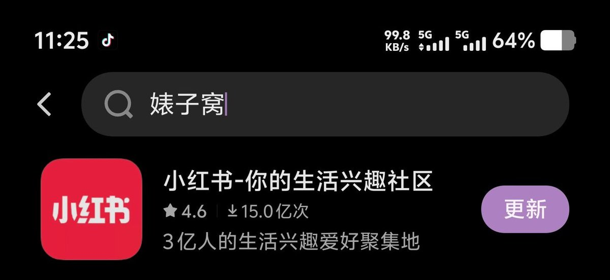

サイバー環状線
@CyberKanjousen
（注：環状線并不认为小红书真的是「婊子窝」，也不提倡使用单一侮辱性词汇形容一个社媒平台的行为。）

サイバー環状線
@CyberKanjousen
Vivo 手机不要命了这是😨
原理：
国产手机厂商的应用商店，当搜索词未匹配到精准的应用名称或关键词时，会降级推荐下载量极高、活跃度大的「头部热门应用」。
但是，比小红书活跃度高的应用比比皆是，为什么偏偏是小红书？这其实还和竞价广告与热门词覆盖有关。 https://t.co/3krjlEoxGJ